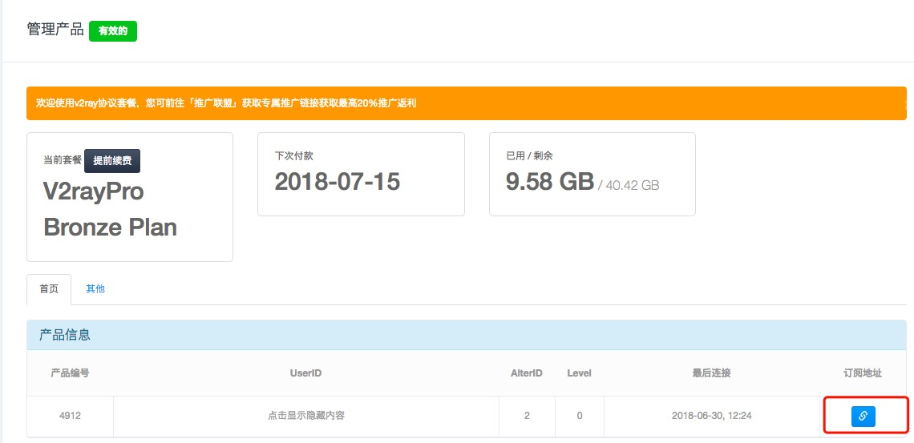
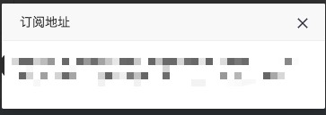
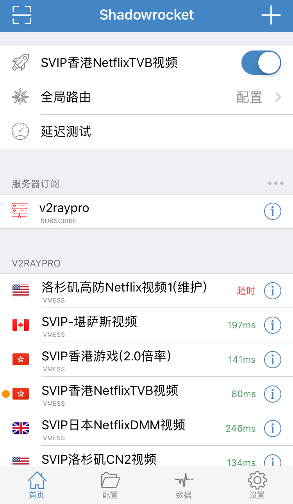

Shadowrocket
系统要求： iOS 10 及以上
软件版本： Shadowrocket 最新版
设备要求： iPhone/iPad
1. 如果国区账户无 Shadowrocket APP
请看此篇博文：在 国区 iOS 设备上安装 Shadowrocket
2. 使用浏览器登录到 网站 管理门户
建议使用 Safari 访问管理门户，然后找到我的产品，点击您的套餐进入配置详情页面

3. 获取节点配置
点击页面中的「扫码连接」功能区中「从URL添加该节点」按钮，然后在弹出的窗口中复制URL地址。

切换到「Shadowrocket」程序，此时会弹出添加节点页面,点击添加按钮即可添加完毕。

4. 完成设置 Shadowrocket 程序
打开 Shadowrocket App，选择你需要的节点，点击全局路由，设置模式为代理，然后滑动「未连接」后方的滑块。

程序将会提示需要添加一条VPN信息，请点击「Allow」完成设置，之后再次滑动滑块便会连接到接入点信息地址，完成整个设置。